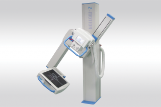
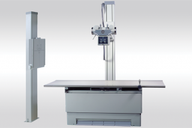
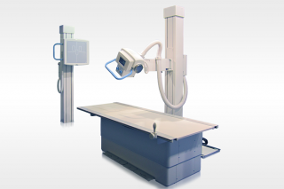
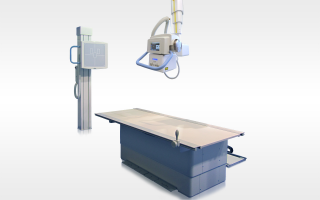

- info@electromed.com.co
- (57) 318 649 6540
- Cll 106 #14B-50

Equipos Rayos X

Z-Motion
Sistema de brazo-U - Novedoso Equipo con digitalización directa
Características
- Rangos de 50 kW – 80 kW, 100 kHz, 400 a 1000 max mA, 40 a 150 kV (dependiendo del tubo del X-ray seleccionado - preguntar por las mejoras de tubos de X-ray)
- Fuente de alimentación de 208 a 400VAC trifase.
- Microprocesador de control que entrega mejor administración de la exposición
- Calibración automática para reducir tiempos de instalación
- Tamaño compacto: 60 cm x 40 cm x 50 cm (L x W x D), Versión Estándar (20/30 kWs): 90 cm x 40 cm x 50 cm
Parámetros
- Movimientos motorizados con frenos electrónicos y clutchs. Opción de control manual para movimiento vertical, rotacional y variable
- Alcance de movimiento vertical de hasta 125Cms
- SID ajustable entre 100 y 200 cms
- Rotación del brazo entre -45° hasta +135°
- El tubo de Rayos X tiene una rotación entre -90° y +90°

Perform-X DR
Equipo digital de montura normal
Características
- Generador controlado por microprocesador de alta velocidad.
- Cama elevadora.
- Soportes montados en el suelo con variedad de combinaciones de movimientos.
- Panel simple o doble con modalidad DX DICOM.
- Tubo de Rayos X de alta calidad, colimador manual y cables HV.
Parámetros
- Rangos de 50 kW – 80 kW, 100 kHz, 400 a 1000 max mA, 40 to 150 kV (Dependiendo del tubo de Rayos X seleccionado - consulte por la disponibilidad).
- Brazo de tubo rotacional.
- Brazo de movimiento transversal.
- Riel para desplazamiento del brazo del tubo (2.4mts ~ 3.6mts).
- Cama para el paciente.
- Tablero receptor de pared fijo o removible.
- Tablero receptor de mesa fijo o removible.
- Control remoto bluetooth opcional.

Perform-X AT
Sistema con autoseguimiento montado en suelo
Características
- Generador controlado por microprocesador de alta velocidad.
- Cama elevadora motorizada con movimiento Bucky.
- Soportes montados en el suelo con variedad de combinaciones de movimientos.
- Varias opciones de seguimiento automático.
- Colimador opcional automático.
- Posicionamiento de autoenfoque automático opcional.
- Panel simple o doble con modalidad DX DICOM.
Parámetros
- Rangos de 50 kW – 80 kW, 100 kHz, 400 a 1000 max mA, 40 to 150 kV (Dependiendo del tubo de Rayos X seleccionado - consulte por la disponibilidad).
- Brazo de tubo rotacional.
- Brazo de movimiento transversal.
- Motores de bajo impacto para manejo seguro.
- Tablero receptor de pared fijo o removible.
- Tablero receptor de mesa fijo o removible.
- Control remoto bluetooth opcional.

Perform-X ATC - Ceiling
Equipo digital de montura de techo.
Características
- Generador controlado por microprocesador de alta velocidad.
- Opciones de seguimiento automátizado
- Cama elevadora motorizada con movimiento Bucky.
- Soportes montados en el techo con variedad de combinaciones de movimientos.
- Colimador opcional automático.
- Posicionamiento de autoenfoque automático opcional.
- Panel simple o doble con modalidad DX DICOM.
- Pantalla 21" LCD Touch.
Parámetros
- Rangos de 50 kW – 80 kW, 100 kHz, 400 a 1000 max mA, 40 to 150 kV (Dependiendo del tubo de Rayos X seleccionado - consulte por la disponibilidad).
- Movimientos motorizados o manuales: longitudinal, transversal, vertical, inclinación del tubo y rotación.
- Motores de bajo impacto para manejo seguro.
- Tablero receptor de pared fijo o removible.
- Tablero receptor de mesa fijo o removible.
- Control remoto bluetooth opcional.